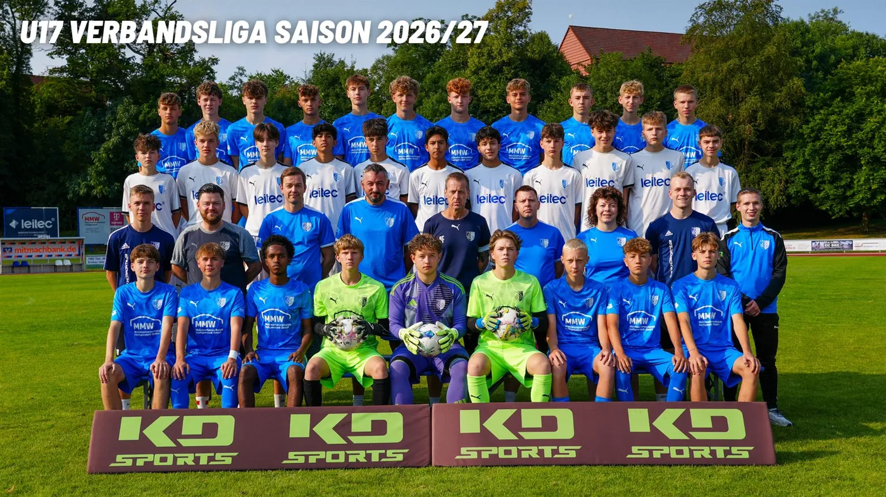

SC Heiligenstadt U17 – Der Kader 2026/27

Verbandsliga – Tabelle
Inhalt von FuPa Hier zeigen wir die Tabelle von FuPa. Beim Laden überträgt dein Browser Daten wie die IP-Adresse an die FuPa GmbH. Datenschutz bei FuPa
Verbandsliga – Spielplan
Inhalt von FuPa Hier zeigen wir den Spielplan von FuPa. Beim Laden überträgt dein Browser Daten wie die IP-Adresse an die FuPa GmbH. Datenschutz bei FuPa
Kreisoberliga – Tabelle
Inhalt von FuPa Hier zeigen wir die Tabelle von FuPa. Beim Laden überträgt dein Browser Daten wie die IP-Adresse an die FuPa GmbH. Datenschutz bei FuPa
Kreisoberliga – Spielplan
Inhalt von FuPa Hier zeigen wir den Spielplan von FuPa. Beim Laden überträgt dein Browser Daten wie die IP-Adresse an die FuPa GmbH. Datenschutz bei FuPa
Nächste Spiele
- 10:30Sa, 24.10.Thüringen-PokalFC Rot-Weiß Erfurt U16:1. SC 1911 HeiligenstadtAuswärtsZum Spiel FC Rot-Weiß Erfurt U16 gegen 1. SC 1911 Heiligenstadt
- 12:30So, 25.10.Kreispokal1. SC 1911 Heiligenstadt II:FSV Preußen Bad LangensalzaHeimspielZum Spiel 1. SC 1911 Heiligenstadt II gegen FSV Preußen Bad Langensalza
- 17:30Fr, 30.10.KreisoberligaSG Silberhausen:1. SC 1911 Heiligenstadt IIAuswärtsZum Spiel SG Silberhausen gegen 1. SC 1911 Heiligenstadt II
- 10:30Sa, 31.10.Verbandsliga1. SC 1911 Heiligenstadt:SG SV Kali UnterbreizbachHeimspielZum Spiel 1. SC 1911 Heiligenstadt gegen SG SV Kali Unterbreizbach
- 10:30Sa, 07.11.VerbandsligaSC 1903 Weimar:1. SC 1911 HeiligenstadtAuswärtsZum Spiel SC 1903 Weimar gegen 1. SC 1911 Heiligenstadt
- 12:30So, 08.11.Kreisoberliga1. SC 1911 Heiligenstadt II:JSG 2017 LeinetalHeimspielZum Spiel 1. SC 1911 Heiligenstadt II gegen JSG 2017 Leinetal
- 10:30Sa, 14.11.Verbandsliga1. SC 1911 Heiligenstadt:SV SCHOTT JenaHeimspielZum Spiel 1. SC 1911 Heiligenstadt gegen SV SCHOTT Jena
- 10:30Sa, 21.11.VerbandsligaSG FC Saalfeld:1. SC 1911 HeiligenstadtAuswärtsZum Spiel SG FC Saalfeld gegen 1. SC 1911 Heiligenstadt
Tabelle und Kader auf fussball.deAlle Termine
Quelle: www.sc1911-heiligenstadt.de · Stand 06.10.2026